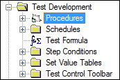

iTest User's Guide
Procedures are programming code (script) used to run iTest applications. They are written in the VCL scripting language and can be executed from numerous sources including other procedures, defined actions, and virtual controls defined in displays. Procedures can handle up to ten arguments. Procedures with arguments are also referred to as functions.
Test Manager Tree

Test files (.tsc) define only one procedure. However, test files can call other procedures. Procedures are stored in the TEST sub-directory of the current $SUPPORTDIR folder. iTest can support multiple sub-directories of the TEST directory for a logical grouping of test procedures. If a procedure is defined as a system core file (SystemCoreFiles) in the powertek.ini file, the procedure name will display in bold on the Tree Bar.
The following user guides contain more information regarding the use of VCL within the iTest products.
The Build process enables you to make changes to your iTest solution and rebuild it without having to shutdown and restart iTest. This feature is helpful because you can perform the necessary modifications to your VCL code, perform a build, and quickly use the changes without waiting for the test system to shutdown and restart. Please note, if you are using this feature while iTest is running, it is important to ensure that a test is not currently active.
You can also do a build while iTest is not running; performing a build in this state enables you to determine whether the solution you are using contains any compile errors.
To access this feature from Test Manager, click the File or Debug option from the Test Manager menu bar or select the Build icon from the toolbar.
Build
When selected, all VCL procedures and functions will be recompiled.
 |
NOTE: | New channels are not instantiated by a build and will result in a test build error if the channels are used in new VCL code. |
Once the build is complete, the Test Builder dialog displays. When errors are present, the dialog will display the file name that contains the error, followed by the line number in parenthesis, and a description of the error, as shown below.
TestBuilder Errors
The same list of errors will also appear in the Test Build Status tab.
Test Build Status
To view and fix errors, locate the file and line number manually in Test Manager. Double-click on each error in the Test Build Status tab to navigate to the line number in the file. In the example below, the line that contains an error had an invalid VCL command listed. The command is the first string on the line up to any whitespace. In the example, the "SysManualLogStart" is not a valid VCL command. To successfully save the changes and compile the code, this line should be commented out or deleted.
Error in Code
After clearing the errors, re-compile the VCL with the Build button.
|
NOTE: | If a TestBuild message box doesn't appear, then it is being suppressed using a combination of several powertek.ini settings. The relevant settings are TestBuilderSilent, TestBuilderOKMsgSilent, and TestBuilderIgnoreLOLError. For more information, refer to the INI Options section. |
TestBuilder in SolutionBuilder has the following limitations:
voSysiTestBuildErrors and voSysTestBuildComplete) are not updated.To run TestBuilder in SolutionBuilder, do the following:
Click the Build icon, located on SolutionBuilder's bottom menu.
Build
Upon a successful build with no errors, the following dialog will appear:
No Errors
If errors are present in your solution, the following dialog will appear to identify the errors:
Build Errors
The TestStatusDisplay is a standalone utility that is useful for seeing what is happening in terms of running VCL procedures in real-time. This display provides many pieces of information for all of the active procedures at any given moment. A screenshot can be seen here:
TestStatusDisplay Interface
TestStatusDisplay.exe can be launched from a button on your console, or you can run it directly from the $EXECUTEDIR while iTest is running.
TestStatusDisplay will show up to 50 of the active procedures that are executing inside of vxin_exec. If there are more than 50 procedures running, use the Snapshot button to view the complete list. This list must be manually refreshed and shows less information than the main screen of TestStatusDisplay.
On the main TestStatusDisplay screen, you can check how long each procedure has been running, how it was started, the current line that is executing, and the current state of the procedure. All of this information provides a very useful set of metrics for helping you write new VCL code and check that it is running correctly.
For more information regarding the TestStatusDisplay feature, refer to the TestStatusDisplay documentation.
There is an .ini option that will affect whether or not the Build menu option or the $REBUILD command can be executed. For example:
RebuildProcedure=MyTestCheck
Where, MyTestCheck is a procedure that determines if the system is in a safe state to allow rebuilding. For example, this procedure could be coded to make sure the test specimen is not in a running condition before allowing the rebuild. If the designated rebuild procedure determines that a rebuild cannot occur, then it should provide a message to the operator and prevent the rebuild. Therefore, if your Build menu option from Test Manager is not working, determine whether there is a rebuild procedure defined in powertek.ini.